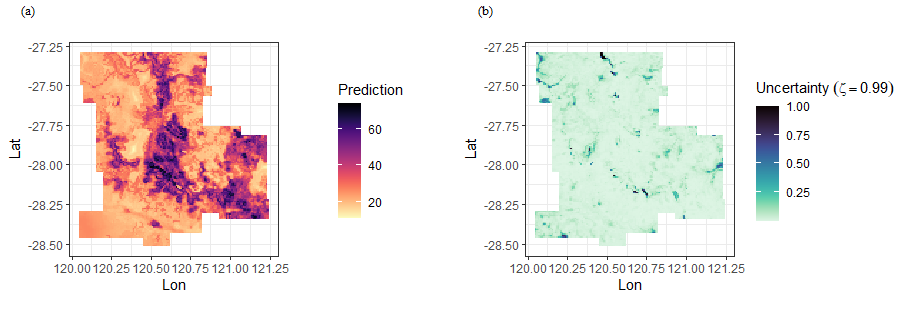
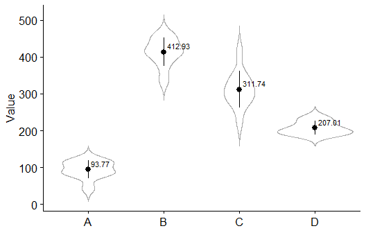
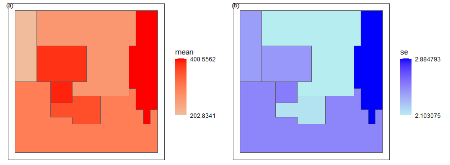

The goal of spEcula is to make it easier to use R for spatial prediction based on various spatial relationships (e.g. spatial dependence, spatial heterogeneity and geographical similarity).
Overview
Full document of the most recent release of spEcula is online: https://spatlyu.github.io/spEcula/
Current models and functions provided by spEcula are:
| spatial prediction method | spEcula function | support status |
|---|---|---|
| Geographically Optimal Similarity | gos() |
✔️ |
| Sandwich Mapping Model | sandwich() |
✔️ |
Installation
You can install the development version of spEcula from github:
# install.packages("devtools")
devtools::install_github("SpatLyu/spEcula",build_vignettes = T,dep = T)or install spEcula from r-universe:
install.packages('spEcula', repos='https://spatlyu.r-universe.dev')Example
Geographically Optimal Similarity (GOS) model
library(spEcula)
data(zn)
data(grid)
zn$Zn = log(zn$Zn)
tictoc::tic()
g1 = gos(Zn ~ Slope + Water + NDVI + SOC + pH + Road + Mine,
data = zn, newdata = grid, kappa = 0.08,cores = 6)
tictoc::toc()
## 6.6 sec elapsed
g1$pred = exp(g1$pred)
grid$pred = g1$pred
grid$uc99 = g1$`uncertainty99`
g1
## # A tibble: 13,132 × 7
## pred uncertainty90 uncertainty95 uncertainty99 uncertainty99.5
## <dbl> <dbl> <dbl> <dbl> <dbl>
## 1 21.8 0.0818 0.0523 0.0287 0.0243
## 2 22.5 0.0529 0.0356 0.0102 0.00954
## 3 22.9 0.0693 0.0429 0.0224 0.0148
## 4 22.6 0.0665 0.0572 0.0140 0.00799
## 5 21.9 0.0736 0.0460 0.0181 0.0139
## 6 21.5 0.0728 0.0480 0.0200 0.0169
## 7 23.2 0.0453 0.0345 0.0185 0.0178
## 8 24.8 0.0488 0.0434 0.0227 0.0118
## 9 25.0 0.0435 0.0432 0.0186 0.0103
## 10 24.5 0.0217 0.0217 0.0182 0.0141
## # ℹ 13,122 more rows
## # ℹ 2 more variables: uncertainty99.9 <dbl>, uncertainty100 <dbl>
f1 = ggplot(grid, aes(x = Lon, y = Lat, fill = pred)) +
geom_tile() +
scale_fill_viridis(option="magma", direction = -1) +
coord_equal() +
labs(fill='Prediction') +
theme_bw()
f2 = ggplot(grid, aes(x = Lon, y = Lat, fill = uc99)) +
geom_tile() +
scale_fill_viridis(option="mako", direction = -1) +
coord_equal() +
labs(fill=bquote(Uncertainty~(zeta==0.99))) +
theme_bw()
plot_grid(f1,f2,nrow = 1,label_fontfamily = 'serif',
labels = paste0('(',letters[1:2],')'),
label_fontface = 'plain',label_size = 10,
hjust = -1.5,align = 'hv') -> p
p
Sandwich Mapping Model
library(sf)
library(tidyverse)
library(spEcula)
simpath = system.file("extdata", "sim.gpkg", package="spEcula")
sampling = read_sf(simpath,layer = 'sim_sampling')
ssh = read_sf(simpath,layer = 'sim_ssh')
reporting = read_sf(simpath,layer = 'sim_reporting')
sampling_zone = sampling %>%
st_join(ssh['X']) %>%
st_drop_geometry()
library(ggpubr)
ggerrorplot(sampling_zone, x = "X", y = "Value",
desc_stat = "mean_sd", color = "black",
add = "violin", add.params = list(color = "darkgray")) +
geom_text(data = summarise(sampling_zone,vmean = mean(Value),.by = X),
aes(x = X, y = vmean, label = round(vmean,2)),
vjust = -0.5, hjust = -0.15, color = "black",size = 3) +
scale_x_discrete(labels = LETTERS[1:4]) +
theme(axis.title.x = element_blank())
sim_est = sandwich(sampling = sampling,stratification = ssh,reporting = reporting,
sampling_attr = 'Value',ssh_zone = 'X',reporting_id = 'Y',
weight_type = 'area')
sim_est
## Simple feature collection with 7 features and 3 fields
## Geometry type: POLYGON
## Dimension: XY
## Bounding box: xmin: 5.684342e-14 ymin: 2 xmax: 4 ymax: 6
## Geodetic CRS: WGS 84
## # A tibble: 7 × 4
## Y sandwichest_mean sandwichest_standarderror geometry
## <dbl> <dbl> <dbl> <POLYGON [°]>
## 1 1 381. 2.43 ((0.8 4, 0.8 4, 1 4, 1.2 4, …
## 2 2 262. 2.10 ((2.8 6, 2.6 6, 2.4 6, 2.2 6…
## 3 3 298. 2.49 ((2.4 3, 2.4 2.8, 2.2 2.8, 2…
## 4 4 401. 2.88 ((4 3.6, 4 3.8, 4 4, 4 4.2, …
## 5 5 390. 2.53 ((1 3.6, 1 3.4, 1.2 3.4, 1.4…
## 6 6 357. 2.15 ((1.6 3, 1.6 2.8, 1.8 2.8, 2…
## 7 7 203. 2.40 ((0.6 5, 0.6 5, 0.6 5.2, 0.6…
library(cowplot)
f1 = ggplot(data = sim_est, aes(fill = sandwichest_mean),
color = "darkgray") +
geom_sf() +
labs(fill='mean') +
scale_fill_gradient(low = "#f0bc9c", high = "red",
breaks = range(sim_est$sandwichest_mean)) +
theme_bw() +
theme(
axis.text = element_blank(),
axis.ticks = element_blank(),
axis.title = element_blank(),
panel.grid = element_blank(),
legend.position = 'right',
legend.background = element_rect(fill = 'transparent',color = NA)
)
f2 = ggplot(data = sim_est, aes(fill = sandwichest_standarderror),
color = "darkgray") +
geom_sf() +
labs(fill='se') +
scale_fill_gradient(low = "#b6edf0", high = "blue",
breaks = range(sim_est$sandwichest_standarderror)) +
theme_bw() +
theme(
axis.text = element_blank(),
axis.ticks = element_blank(),
axis.title = element_blank(),
panel.grid = element_blank(),
legend.position = 'right',
legend.background = element_rect(fill = 'transparent',color = NA)
)
plot_grid(f1, f2, nrow = 1,label_fontfamily = 'serif',
labels = paste0('(',letters[1:4],')'),
label_fontface = 'plain',label_size = 10,
hjust = 0.05,align = 'hv') -> p
p